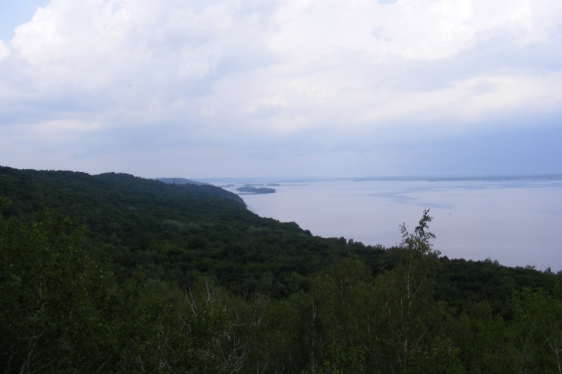
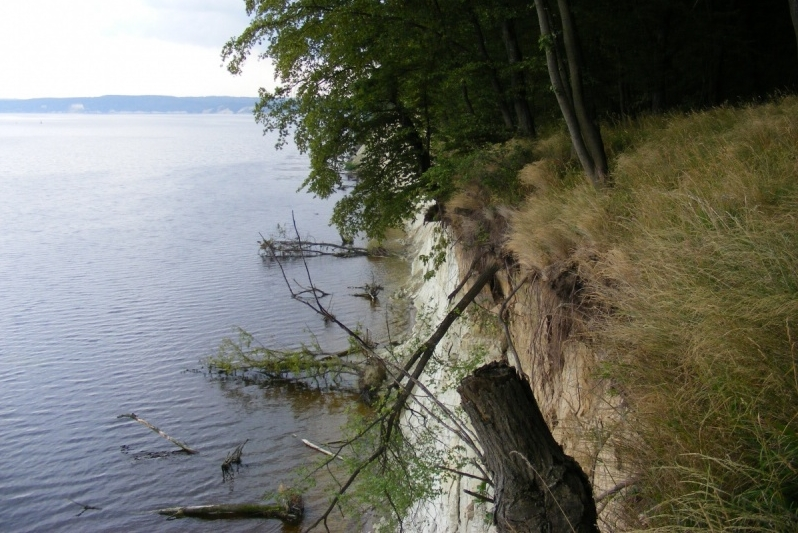
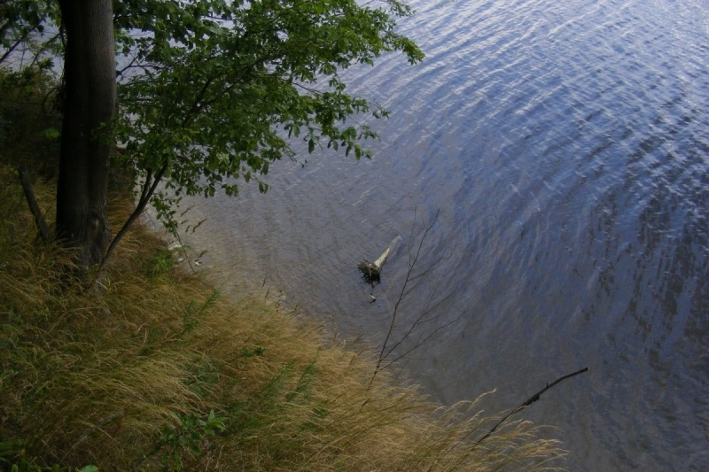
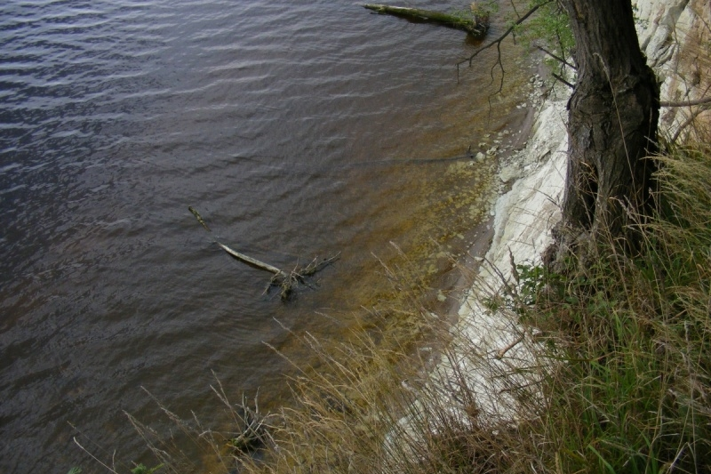
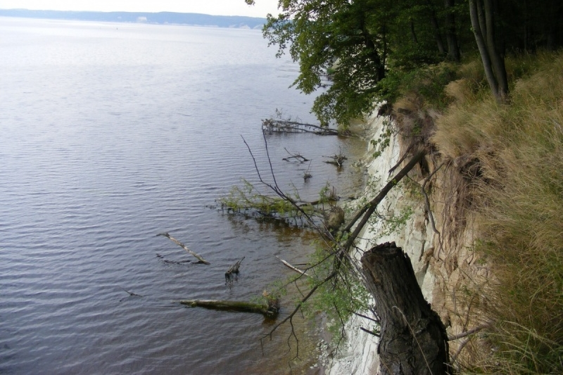
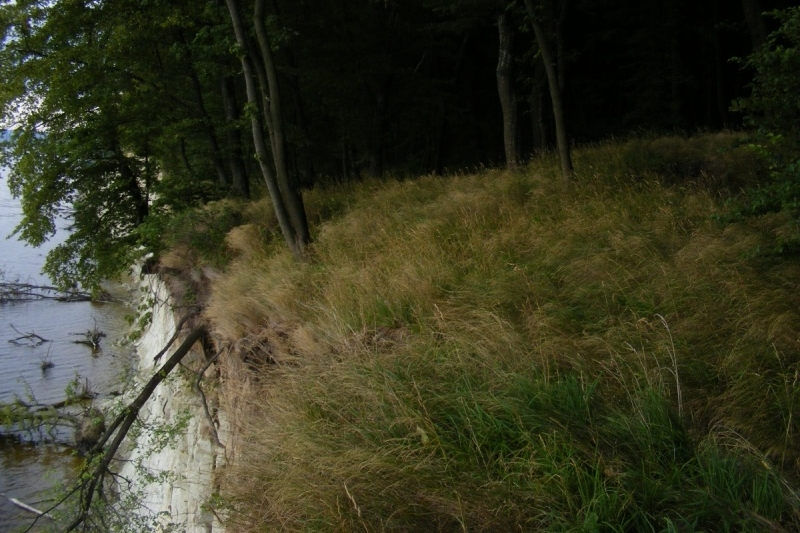
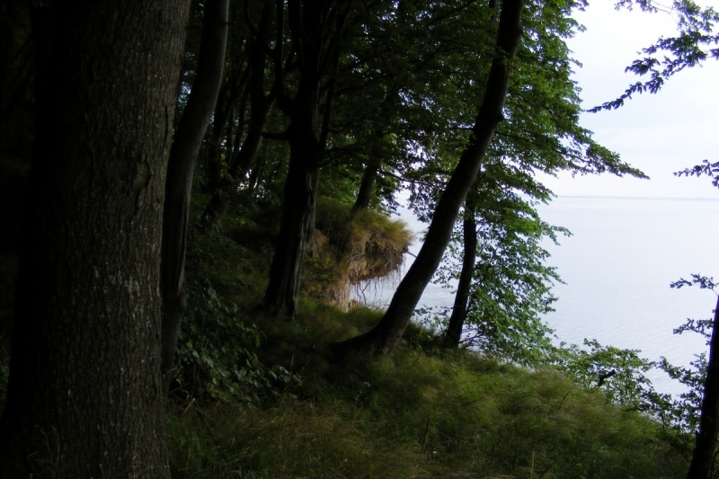
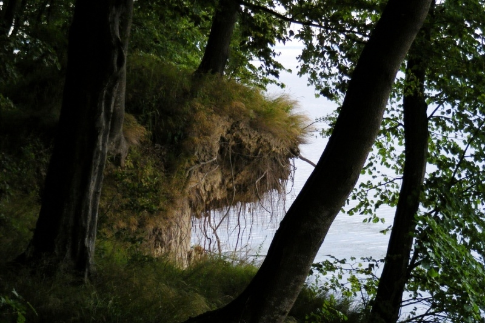
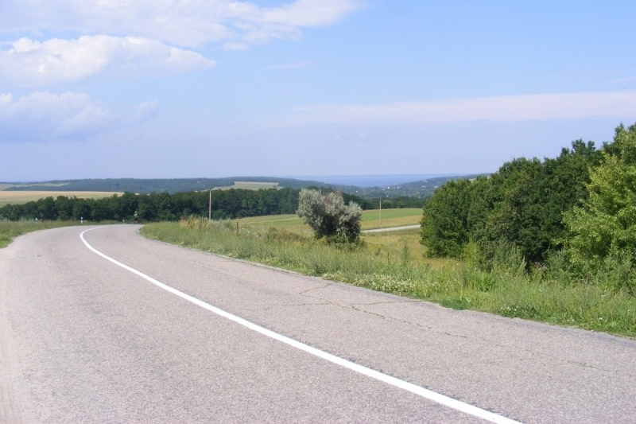

У бік Ромашок
Ромашки - село у якому мій батько купив хату із земельною ділянкою у 1989 році. Картопля з цбого городу добре допомогла нам пережити 90-ті роки. Але Ромашки залишаться назавжди у моєму житті через навколишню природу - ліси, луки, кручі, дикіх звірів.
Це була перша спроба, але не вдала. У електричці мій компаньйон умовив мене змінити маршрут - вийти на декілька станцій раніше. У Ромашки ми не встигли - не вистачало часу на повернення до останної електички на Київ. Але все одно побачили багато цікавого і добре покаталися. Загальна відстань маршруту - 121 км.
Їхали в основному полями - стежками та дорогами.

Далеко видно пам'ятник Букринському плацдарму у Балико-Щучинці. Чому пам'ятник стоїть не у Букрині? А тому що до Букрина не було асфальту - як комуністам-начальникам туди було їздити? Асфальтову дорогу до Букрина совіцька власть спромоглася прокласти тільки у 80-ті роки.
- 
- 
- 
- 
- 
- 
- 
Канівське водосховище підмиває крутий правий берег Дніпра. Крім загальної еколоігчної катастрофи по всьому Дніпру, який через каскад гідроелектростанцій за дуже невеликий час перетворився у ставок, є і локальні. Вода наступає на берег, дерева поступово падають у неї.
Біля Ходорова стало зрозуміло, що у Ромашки не встигаємо. Вирішили заїхати на пляж у Ходорові. На передостанньому фото залишки пристані. Колись, у Ходорів заходили Метеори та Восходи, а у 90-х роках раз пливли звідси до Києва на катері, дуже довго - годин 6.

А далі, залишив Ходорів і Дніпро позаду поїхали асфальтом на електричку у Миронівку